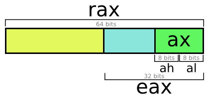
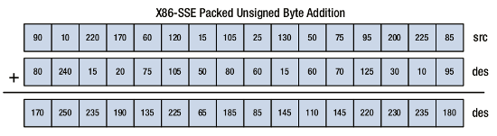
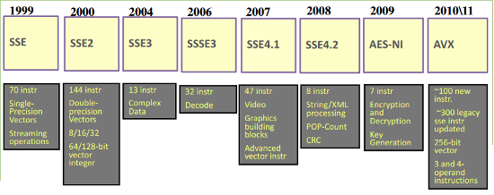
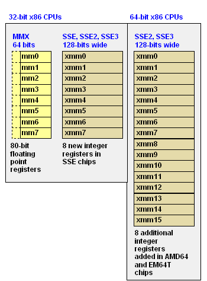
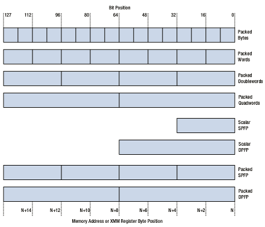
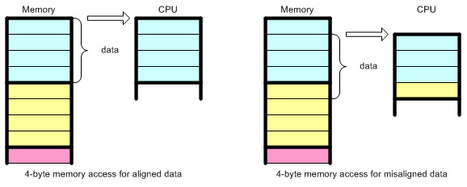

Nov 30th, 2016
Introduction#
I recently gave a training to my co-workers, about the C language. Wasn't really a training, but an introduction. With attendies really used to high level programing language, such as PHP, it was not very easy to teach some low level concepts, yet crucial to understand the power of information computation. This is mainly because we don't cope with the same problems in low level languages, than in high.
But, how could one pretend to master a (high level) language, if one doesn't even know what the machine CPU does, how it does compute things, and if this way of computing things is efficient, or not ? This is the main problem of nowadays 2017 high level programing languages (auto memory management for most of them) : many people come to them, without having achieved the first steps. I still think that knowing the low level helps a lot designing high level programs that are efficient. This is because your brain knows - even barely - how things will be done, that you can build better programs.
Many school courses still start by teaching some assembly and C : those are the knowledges I myself have been taught back in late nineties. This is crucial and not delivering such training will create half-knowledge people, that will for sure suffer from the lack of that kind of low level knowledge once in their career. It's a fact : high level changes a lot, very often ; but low level changes order of magnitude slower, and less often.
In my opinion, the future is full of low-level programing oportunities; because there will always be a need in low level, as everything starts by a begining, and there must be some people that build that "begining", so that other people can continue stacking up things and layers, to end having a concrete thing that is both helpful and efficient.
Do you really think IOT items, will be developed using high level languages ? Future video codecs ? Future VR applications ? Future networks ? Future Operating Systems ? Future console operating systems, or games ? Future in-car systems, like auto-pilots, colisions avoidance algorithms, and so many other things .... ? All those are written using low level languages, like the C language or assembly directly.
We even start to see "new" architectures emerging, like the very interesting ARM one which equips 98% of the cellphones on the planet. If nowadays you can use Java to build android apps, this is because android is an operating system which has been writen in Java and C++, should you know that the Java language itself - like 80% of modern high level languages - is written in C (or C++).
Eventually C meets some sibling languages, but staying in the imperative programming model, those are pretty uncommon or less mature. Fortran could beat C in performance in some specific domains, Fortan and C being about the same age. And for purely specific mathematic applications, some specialized languages beat C performances. But C stays by far the most used and general-purpose general-efficient low level language in the world.
Let's start#
This blog post will use Linux under X86_64 CPU. It will show you a very simple C program, that can sum 1G of bytes from one file (roughly one billion of bytes, or eight billions of bits), in less than half a second. Try to do that with a high level language, whatever it is, you will never ever reach this kind of performance, even with Java which is known to be pretty fast, with JIT, parallel computing aspects and a nice memory model if well used in userland. As soon as the language is not directly turned to machine instructions, but to some intermediate form (that's high-level languages definition), they can't beat C, even with JIT. They can narrow the gap of performances - in some specific domains - but on a big average they are blown away by the performances C can bring.
We will detail our problematic using the C language, then we'll dive down to the generated X86_64 instructions and we'll optimize our program using what are called SIMD, a kind of instructions in modern CPUs allowing us to treat massive amounts of data in just one instruction of few cycles (few nano-seconds).
A simple C program#
To demonstrate the true power of the C programing language, I'll just take a simple use case, but still a use case that will represent some load : open a file, read each byte from it, and sum them all compacting the sum in one unsigned byte (thus overflowing several times). That's all. Ah yes of course : try to do that in an efficient way (the fastest as possible).
Why do that ? Just for the matter of the exercise here, the goal is that you fully understand what happens given a very simple problem.
Let's go :
#include < stdio.h>
#include < stdint.h>
#include < string.h>
#include < fcntl.h>
#include < unistd.h>
#define BUF_SIZE 1024
int main(int argc, char **argv)
{
int f, i;
ssize_t readed;
unsigned char result = 0;
unsigned char buf[BUF_SIZE] = {0};
if (argc != 2) {
fprintf(stderr, "Usage : %s \n", argv[0]);
exit(-1);
}
f = open(argv[1], O_RDONLY);
if (f == -1) {
perror("Can't open file");
}
while ((readed = read(f, buf, sizeof(buf))) > 0) {
for (i=0; i < readed; i++) {
result += buf[i];
}
}
close(f);
printf("Read finished, sum is %u \n", result);
return 0;
} The payload would be, for example a 1Gb file.
To create a 1Gb file of some random content on your disk, simply use dd :
> dd if=/dev/urandom of=/tmp/test count=1 bs=1G iflag=fullblockNow we can use that file and pass it as an argument to our program (which we'll call 'file_sum') :
> file_sum /tmp/file
Read finished, sum is 186There are tons of ways to achieve the goal, but if we want to add efficiency, then we'll have to understand to some degree :
- How our CPU works, and what it is able to do (what kind of computations it can perform)
- How our system works, by the means of how the Operating System Kernel works
In short : we'll have to have some notions about both the hardware we're gonna run code against, and the low-level software : the OS
Remember about your Kernel#
This blog post obviously is not a kernel course, but remember that we will not ask our CPU chip to communicate with the disk our to-be-read file is stored. This is because in 2016, we build what are called "user space" programs, and one of the definition of user space programs is that they are NOT allowed to access the hardware, directly. At any time a user space program needs some hardware services (access memory, disk, network, card reader etc...), it will ask the OS to do that by the help of what are called system calls. System calls are OS published functions to userland programs. We won't ask for the disk if it is ready, place the disk-head where needed, read X sectors, move the content from the disk on-chip memory to main memory ... blahblahblah. This is the job of the OS kernel, helped by its drivers. If we would have wanted to take hand on such low level tasks, we then should have written a "kernel space" program : mostly a Kernel module.
Why that ? You should read the segmentation fault article I once wrote. It explains that the Kernel is the master that allows several programs to run concurrently, never crashing the machine or letting it in an unrecoverable state. Whatever instructions run. For that, the kernel turns the CPU mode into protected mode ring 3 when it comes to run a user land program ; and guess what ? In ring 3, the program cannot access the hardware mapped memory, as any instruction doing that will throw an exception into the CPU, any memory access out of very specific bounds will also lead to a CPU exception. On CPU exception, the Kernel fires back in running the Exception code which will basically restore the CPU in a stable state, and end our program with a signal (probably SIGBUS).
Ring 3 is the weakest privilege mode : every userland program runs in this mode. You can probe it by reading the first two bits of the CS register in your X86 CPU.
gdb my_file
(gdb) p /t $cs
$1 = 110011The first two bits (weakest) show the current ring level, here : this is effectively 3.
User processes run in a very limited sandbox set up by the OS Kernel, running itself in ring 0 (full privileges). This is why it is not possible for a userland process to leak memory after its been destroyed. All of the data structures that control such things cannot be touched directly by user code; but the kernel takes care of them when the userland process finishes.
So, back to our code : we will not have hand on the performance of the disk read, because this is the Kernel that will perform such a job, using low level FileSystems and hardware drivers.
The calls used here are open()/read() and close().
I did not use the libC functions (fopen(), fread(), fclose()), mainly because those are wrappers around the system calls. Those wrappers could improve or degrade the overall performances. It all depends on the code hidden behind those functions and how they are used in the program. Believe me the libc is very nicely designed and performant (some of its critical functions are directly written in assembly language), but you should know that those "I/O" functions use a buffer (that you can control), and call read() whenever they feel it is time to. Not really what we want : we want full control of our program, so we'll use system calls directly.
Whenever a system call is issued, the kernel fires back in and will mainly issue a read() call on the filesystem, itself issuing an I/O command to the device driver.
All those calls can be seen using Linux tracers, like the wonderful perf tool. System calls are costly for the program, because they issue a context switch. Going from userland to kernel land is what's called a context switch, and we should try to avoid them as they involve a lot of work for the kernel.
But we need such calls ! Here, read() is the slowest one. When the read() is issued, the process will likely be scheduled out of the CPU and will go from running to I/O-waiting state. When the I/O will be ready, the kernel will re-schedule our process on the CPU, and resume it. This can be controlled by flags passed to the open() call.
As you may know, the Kernel implements a buffer cache, that is it remembers chunks of files content it has recently read from disk, caching them to main memory. That means that if you run the same program several times, chances are that the first time will be the slowest, especially if the program is I/O intensive like ours. So to measure its taken time, we'll measure that from the say third, or fourth launch (or we could average times of several individual launches).
Get some knowledge about your hardware and compiler#
So far so good, we know that we won't be able to finely control the 3 syscalls performance : open(), read() and close(). But let's trust Kernel-land developpers for those latter. Also, we nowadays most often use SSD technology, so
we may bet that the read of 1Gb contiguous space (for our example) from a SSD drive will be fast.
What else, could then take time in our code ?
Not hard to spot : the way we sum bytes. You may then say "hey but, that's a simple loop, summing. What could we do about it here ?"
The two answers are : know your compiler, and know your hardware CPU chip.
Let's try to naively compile this code, with no optimizations, and run it :
> gcc -Wall -g -O0 -o file_sum file_sum.cThen profile it, with a simple time command :
> time ./file_sum /tmp/big_1Gb_file
Read finished, sum is 186
real 0m3.191s
user 0m2.924s
sys 0m0.264sRemember, launch it several times for the Kernel page cache to warm-up. After several times, on my machine, I end up summing 1Gb contiguous from an SSD, in 3.1 seconds. My laptop CPU is an Intel(R) Core(TM) i5-3337U CPU @ 1.80GHz, I run Linux 3.16.0-4-amd64 so my architecture is a very traditional X86_64 arch, I used GCC 4.9.2 to compile the code.
What time teaches us, is that we spend most of our time in userland (about 90% of total time). See how systemland time is tiny ? Those are the times where the Kernel runs on our behalf : the time performing the system calls. In our example : the time opening, reading and closing from the disk. Pretty fast isn't it ?
Note that our read buffer is here 1Kb. That means for a 1Gb file that we'll call read() 1024*1024 times (1048576 times). What about increasing our buffer size, so that we call read() less often ?
Let's give it 1Mb, that should lead to 1024 calls to read(), 1024 times less than before.
Change, recompile, re-run several times while profiling :
#define BUF_SIZE 1024*1024.
> gcc -Wall -g -O0 -o file_sum file_sum.c
> time ./file_sum /tmp/big_1Gb_file
Read finished, sum is 186
real 0m3.340s
user 0m3.156s
sys 0m0.180sGreat, by calling read() much less times, we fall from about 264ms to 180ms. Be careful if you want to push the limits : read() has a hard limit, and our buffer is stack allocated. Remember that the maximum stack size under modern Linux defaults to 8Mb (changeable as user limits).
Try to call for the Kernel as less as possible. Syscall intensive programs usually delegate I/O syscalls to a dedicated thread and/or program I/O for async.
Faster, stronger (and not very harder)#
Why the hell does summing those bytes take so long ? The answer is because we ask our CPU to sum them in a very inefficient way. Let's see how the CPU does, by disassembling the program.
Remember that the C language is nothing without a compiler. The C language, is just a human affordable language to program a machine; that means that whatever happens, you'll need a C compiler, to turn your C code into machine low level instructions. Nowadays, we mainly use C to program systems and low level tasks, because we want to be able to port our code from one CPU architecture to another, without rewriting all the code. This is why C was invented in 1972.
The C language is nothing without a compiler. A bad compiler or a bad compiler usage will lead to bad performances. This is the same for other competitor languages that get compiled to machine code, like Fortran f.e.
But the CPU - the computing power - runs some machine code that can be represented as instructions in what's called an assembly language. We can dump the assembly instructions from a C program very easily just by asking the compiler, or by using a debugger.
And no : assembly is not hard. It depends on the assembly language and in this blog post we'll only be interested in the most worldwide spreaded assembly : X86 (and in 2016 : X86_64).
X86_64 is not hard (let me insist). It is simply HUGE, horribly HUGE. When I started assembly (with Freescale 68HC11), I used some dozens instructions, nowadays, X86_64 counts thousands of instructions. And the manuals are what they are, and what they've always been : cryptic, huge, and in the time PDF did not exist : so heavy to carry in your bag on your back when stepping to school (I remember).
Let's scare ourselves. Here are Intel manuals about X86_64. Thousands, and thousands of sheets. Yes, Kernel developpers, and very very low level developpers use that as their primary resource. So you thought PHP online manual could be improved huh ?
Ok, let's go back on earth : do you really think that a tiny program like ours would need the reading of thousands of Intel manuals ? No. No because like always : a bunch of instructions are used everywhere - the 80/20 rule applies here (80% of your program will be made with 20% of the total instructions, that's barely that).
By the way, Intel's website and manuals are fascinating. If you can, you really should read some of them.
Here is the C code, repeated, and the disassembly of the part that interest us (from the while() loop) compiled with GCC 4.9.2 without any optimization
#define BUF_SIZE 1024
int main(int argc, char **argv)
{
int f, i;
ssize_t readed;
unsigned char result = 0;
unsigned char buf[BUF_SIZE] = {0};
if (argc != 2) {
fprintf(stderr, "Usage : %s \n", argv[0]);
exit(-1);
}
f = open(argv[1], O_RDONLY);
if (f == -1) {
perror("Can't open file");
}
while ((readed = read(f, buf, sizeof(buf))) > 0) {
for (i=0; i < readed; i++) {
result += buf[i];
}
}
close(f);
printf("Read finished, sum is %u \n", result);
return 0;
}
00400afc: jmp 0x400b26 < main+198>
00400afe: movl $0x0,-0x4(%rbp)
00400b05: jmp 0x400b1b < main+187>
00400b07: mov -0x4(%rbp),%eax
00400b0a: cltq
00400b0c: movzbl -0x420(%rbp,%rax,1),%eax
00400b14: add %al,-0x5(%rbp)
00400b17: addl $0x1,-0x4(%rbp)
00400b1b: mov -0x4(%rbp),%eax
00400b1e: cltq
00400b20: cmp -0x18(%rbp),%rax
00400b24: jl 0x400b07 < main+167>
00400b26: lea -0x420(%rbp),%rcx
00400b2d: mov -0xc(%rbp),%eax
00400b30: mov $0x400,%edx
00400b35: mov %rcx,%rsi
00400b38: mov %eax,%edi
00400b3a: callq 0x4005d0 < read@plt>
00400b3f: mov %rax,-0x18(%rbp)
00400b43: cmpq $0x0,-0x18(%rbp)
00400b48: jg 0x400afe < main+158>
00400b4a: mov -0xc(%rbp),%eax
00400b4d: mov %eax,%edi
00400b4f: callq 0x4005c0 < close@plt> Can you see how inefficient this code is ? If not, because those are cryptic lines to you , let me quickly introduce you to X86_64 assembly, by commenting the above dump, and what it does exactly.
X86_64 assembly basics#
We should stay in a short blog post and here again, we won't give a full X86_64 course. Please, try to find info, here or there, if you miss some of them.
Think in bytes, think in powers of 2 and 16
- Each instruction is stored at a specific address in memory, denoted by the left column
- Each instruction is unique and has a name (a mnemonic) : LEA - MOV - JMP etc... There exists several thousands of them in modern X86_64
- X86_64 is a CISC architecture. One instruction can lead to several internal lower level instructions in the pipeline, each of these may eat several clock cycles to execute (1 instruction != 1 CPU cycle)
- Each instruction can take 0, 1, 2, or 3 operands maximum. You will often see 1 or 2.
- There exist two main model to represent assembly : AT&T (also called GAS), and Intel.
- In AT&T, you read INSTR SRC DEST
- In Intel you read INSTR DEST SRC
- There exist some other differences, it is not that hard to turn from one to the other when your brain is trained. They are just syntaxes ok, nothing more.
- We usually use AT&T, some people prefer Intel. GDB defaults to AT&T syntax for X86. Get used to AT&T here
- X86_64 is little-endian , prepare your brain to invert addresses as your eyes read them. Always group by bytes, it is easier to think like this (I notice)
- X86_64 does not allow memory-to-memory operations. There must be a register somewhere to treat the data
- $ means a static immediate value ($1 is the value '1', for example)
- % means a register access (%eax : access the EAX register)
- (parenthesis) is a memory access, the star of C to dereference a pointer ( (%eax) means access the memory zone which address was stored in EAX register)
Registers#
A register is a memory zone of a fixed size onto the CPU chip. This is not the RAM ! This is absolutely way faster than RAM. A RAM access is performed in about 100ns (bypassing any Layer of cache) but registry access is performed in 0ns. The main thing to understand in CPU programming is this scenario, which keeps repeating again, and again, and again :
- Load a info from RAM memory, to a register : now the CPU "owns" a value
- Apply a treatment on the register (multiply its value by 3, for example)
- Store back the value from that register, to RAM memory : the info is saved from the CPU to the memory
- You could also move the register data, into another compatible register (of the same size), if you wanted to
I recall you that X86_64 cannot make treatments from RAM memory to RAM memory. You have to transfer to a register first.
There exists dozens of registers, we can't detail all here. We usually use "general purpose" registers : registers to compute things.
In X86_64 (this is different from X86 : 32 bit mode) , we have those registers to do whatever we want to : a, b, c, d, di, si, 8, 9, 10, 11, 12, 13, 14 and 15.
Each register is 64bit size (8 bytes), BUT, they can be accessed in 64bit mode, in 32bit mode, in 16bit mode or in 8bit mode. It all depends what you need.
Register A. Access in 64bits : RAX, access in 32bits : EAX, access in 16bits : AX. Access in 8bits, Low part : AL, High part : AH.
That's all. You see how easy it is ? A CPU is a very silly piece of silicon : it does only perform very simple operations, on very small parts of a byte. With general purpose registers, you can't access a bit, but at minima a byte. We usually access more than that :
- A byte, are 8 bits, this is the smallest part of information you can access. That's a BYTE
- A double-byte, are 16 bits, and we call that a WORD
- A double-double-byte, are 32 bits, we call that a DWORD (double word)
- 8 contiguous bytes, are 64 bits, we call them a QWORD (quad word, 4 times a 16bits word)
- 16 contigous bytes, that's 128 bits, we call them a DQWORD (a double-quad-word)
OK for the vocabulary ? Let's continue then, but before a picture that sums all :

Get more information about X86 at http://sandpile.org/ or from Intel/AMD/Microsoft websites. Take care : X86_64 works a little bit differently from X86 (32 bits mode). Also, read Intel manuals. No need to read from sheet 1 to 18625342 ... Grep the infos you are interested in.
X86_64 Code analysis#
00400afc: jmp 0x400b26 JMP is an unconditionnal jump. Ok, Let's jump to address 0x400b26
00400b26: lea -0x420(%rbp),%rcx
00400b2d: mov -0xc(%rbp),%eax
00400b30: mov $0x400,%edx
00400b35: mov %rcx,%rsi
00400b38: mov %eax,%edi
00400b3a: callq 0x4005d0 < read@plt>This code is the call to read(); read() is a system call, and if you dive deeper in X86_64 calling convention, you will see that most parameters are not passed by the stack anymore, but by registers.
This improves performance of every function call under X86_64 Linux, compared to 32 bits mode where the stack would have to be used for any call.
The Kernel syscall table teaches us that for read(int fd, char *buf, size_t buf_size), the first parameter (file descriptor) must be passed in RDI, the second (buffer to fill) in RSI and the third (size of the buffer to fill) in RDX.
This is what the code above does. It uses RBP , which stands for "Register Base Pointer". RBP memorize the very beginning of the current stack space, whereas RSP ("Register Stack Pointer") memorize the current stack top if we would need to play with the stack. The stack is nothing more than one big memory zone dedicated for us, it contains local function variables, alloca() variables, the return address and can contain function arguments if there are several of them.
Into the stack are stored the local variables of the main() function we are in.
00400b26: lea -0x420(%rbp),%rcxLoad Effective Address stored at RBP minus 0x420, to RCX. This is our buffer variable : buf. Note that LEA doesn't read the value behind the address, but the address itself. Under GDB, you can print any value, and compute maths :
> (gdb) p $rbp - 0x420
$2 = (void *) 0x7fffffffddc0You can also display every register, with info registers
> (gdb) info registers
rax 0x400a60 4196960
rbx 0x0 0
rcx 0x0 0
rdx 0x7fffffffe2e0 140737488347872
rsi 0x7fffffffe2c8 140737488347848
... ...Continuing
00400b2d: mov -0xc(%rbp),%eaxMove the value at the address pointed by RBP minus 0xc, into EAX. This is likely to be our f variable. This can be confirmed easily :
> (gdb) p $rbp - 0xc
$1 = (void *) 0x7fffffffe854
> (gdb) p &f
$3 = (int *) 0x7fffffffe854Continuing.
00400b30: mov $0x400,%edxMove the value 0x400 (1024 in decimal) into EDX. This is sizeof(buf) : 1024 , the third parameter for read().
Continuing
00400b35: mov %rcx,%rsi
00400b38: mov %eax,%edi
00400b3a: callq 0x4005d0 < read@plt>Move the content of RCX into RSI. RSI is the second parameter to read(). Move the content of EAX into EDI. EDI is the third parameter for read().
Then : call the read() function.
Every system call returns its value into register A (sometimes also in D). As read() returns a ssize_t, this weight 64 bits, thus to read the return value we need to probe the whole A register : we use RAX (64 bits read of registry A). So :
00400b3f: mov %rax,-0x18(%rbp)
00400b43: cmpq $0x0,-0x18(%rbp)
00400b48: jg 0x400afe < main+158>Move the return value of read() which is in RAX, in the address pointed by RBP minus 0x18.
A quick watch confirms this is our readed variable from C code.
CMPQ : Compare Quad-Word. Compare the value of readed with the value 0.
JG : Jump if greater, to 0x400AFE. This is just the comparison in the while() loop from the C code.
We keep reading our buffer, so, let's jump to 0x400AFE, it should be the beginning of the for() loop.
00400afe: movl $0x0,-0x4(%rbp)
00400b05: jmp 0x400b1b < main+187>MOVL : Move a Long (32 bits) of value 0 to the address pointed by RBP minus 4. This is i. i is an integer in C, so 32 bits, or 4 bytes. It is then stored as the very first variable into the stack frame of main() (represented by RBP).
Then jump. Let's follow that at 0x400B1B , we should find the following of our for() loop.
00400b1b: mov -0x4(%rbp),%eax
00400b1e: cltq
00400b20: cmp -0x18(%rbp),%rax
00400b24: jl 0x400b07 Move the value pointed by address in RBP minus 4 (likely an integer) into EAX.
CLTQ : Convert Long To Quad. CLTQ acts on register A. It sign extends EAX to a 64 bits integer, fetchable by RAX.
CMP : Compare value in RAX with value pointed by address into RBP minus 0x18. This compares our i variable from the for() loop, with the variable readed.
JL : Jump if Lower, to 0x400B07. We are at the first step into the for() , so yes : we will jump.
00400b07: mov -0x4(%rbp),%eax
00400b0a: cltq
00400b0c: movzbl -0x420(%rbp,%rax,1),%eax
00400b14: add %al,-0x5(%rbp)
00400b17: addl $0x1,-0x4(%rbp)
00400b1b: mov -0x4(%rbp),%eax
00400b1e: cltq
00400b20: cmp -0x18(%rbp),%rax
00400b24: jl 0x400b07 < main+167>Here is the most interesting part.
MOV i in EAX (i is -0x4(%rbp) as told before). Then, CLTQ : sign-extend it to 64 bits.
MOVZBL : MOV Zero-extend Byte to Long, stored at (1*RAX+RBP) minus 0x420 into EAX. This seems complex, but those are just maths ;-) This is buf[i] computation, in just one instruction. This is the power of C pointers : buf[i] is buf + i*sizeof(buf[0]) bytes. The resulting address is then easily computable in assembly and compilers have just a bunch of maths to do to generate such an instruction.
Now that we loaded that into EAX, we add this value to result :
00400b14: add %al,-0x5(%rbp)Remember : AL, is the lower byte of the 8-byte-large RAX (RAX and AL represent both the A register), this is buf[i], as buf is of char type and then weigths one byte. result is at -0x5(%rbp) : that is one byte after i, being at 0x4 from RBP : yes, that confirms that result is effectively a char, weighting one byte.
00400b17: addl $0x1,-0x4(%rbp)ADDL : Add a long (32 bits). This adds 1 to i
And go back to the 00400b1b instruction : the for() loop.
A quick summary#
You look tired ? This is because your not used to assembly. And like you've seen by decrypting assembly (X86_64) with me : this is just first-level school maths : add, sub, multiply. Please, don't say it is hard, as adding, substracting etc... are really not hard operations and your brain, when well trained, can perform them very quickly ;-)
Assembly is really easy maths operations : add/sub/mul/div. Assembly languages are easy. But yes : they are very verbose. Feel the diff between "verbose" and "hard" ?
I once said : "If you want your child to further become a good programmer, don't make the mistake to have him learn maths only by base (radix) 10. Train his brain to switch from one base to another. Fundamental algebra are fully understood only when one can represent any quantity, in any radix, especially basis 2, 8 and 16". Use a Soroban, like Japanese people do.
If you feel lost with maths, this is just because of one thing : your brain has always been trained in base 10. Switching from 10 to 2 is hard, because those bases are not multiples in their powers. But switching from base 2 to 16, or 8, is an easy step. With some training, you manage to compute most addresses by head.
So, our for() loop is poor : it needs 6 memory accesses, and was translated as-is from the C source code : it will effectively loop for each byte to sum, and sum it. For each byte - in a file of 1GB - that will make it loop 0x40000000 times, sorry 1073741824 decimal times.
Even at 2Ghz, (remember that in CISC, one instruction != one cycle) looping 1073741824 times takes time. We end up running all the code in about 3 seconds, because this way of computing things (summing bytes one by one from a read file) is awfully inefficient.
Let's vectorize all that by using SIMD#
SIMD. Single Instruction Multiple Data. All is said.
SIMD are special instructions that allows the CPU to work not with one byte, or one word, or one Double-word... But with several of them, in one single instruction.
Please, Welcome SSE : Streaming SIMD Extensions. You know SSE, SSE2 , SSE4, SSE4.2 and MMX, or 3DNow! Because (I hope) you heard those terms when you were about to buy a CPU on the market. SSE are SIMD instructions. And if one CPU can work with many data at a given time : it should oviously decrease the overall computation time. And that is the case : drastically !

Do not only look at the number of cores, the cache sizes or the frequency when you buy a CPU. Look also at the instruction sets supported. You prefer adding one byte to one byte, every nanosecond , or adding 8 bytes to 8 bytes, every 2 nanoseconds ?
SIMD are the instructions that allow very intensive calculus into the CPU. SIMD are used everywhere parallel information processing is allowed. Fields of application :
- Matrix maths (add, transpo, etc...), so the basics of every graphical computing (but GPU are order of magnitude better at doing that).
- Data compression, where several bytes gets processed at once (LZ, GZ, but also MP3, Divx, H264/5, JPEG FFT and so many others)
- Cryptographic applications * Speech or music recognition (like the one used in your cellphone, which embeds a very powerful SIMD based processor, probably ARM architecture)
- etc...
Want a quick overview ? Motion Estimation with Intel® Streaming SIMD Extensions 4. Motion estimation is a crucial algorithm used in every modern video codec. It allows a frame F+1 to get predicted from motion vectors computed from a base frame F, so that we only code the movement of pixels from one picture to the other, instead of encoding both pictures at full sizes. H264 and H265 codecs are wonderful, and open source. Read their code and learn ! (Step to the MPEG norm before)
Make a test :
> cat /proc/cpuinfo
processor : 2
vendor_id : GenuineIntel
cpu family : 6
model : 58
model name : Intel(R) Core(TM) i5-3337U CPU @ 1.80GHz
(...)
flags : fpu vme de pse tsc msr pae mce cx8 apic sep mtrr pge mca cmov pat pse36 clflush dts acpi mmx fxsr sse sse2 ss ht tm pbe syscall nx rdtscp lm constant_tsc arch_perfmon pebs bts rep_good nopl xtopology nonstop_tsc aperfmperf eagerfpu pni pclmulqdq dtes64 monitor ds_cpl vmx est tm2 ssse3 cx16 xtpr pdcm pcid sse4_1 sse4_2 x2apic popcnt tsc_deadline_timer aes xsave avx f16c rdrand lahf_lm ida arat epb xsaveopt pln pts dtherm tpr_shadow vnmi flexpriority ept vpid fsgsbase smep ermsSee all those flags ? Those are mainly supported instructions and instruction sets on my laptop CPU.
We can spot from here : sse, sse2, sse4_1, sse4_2, aes, avx among all.
AES allows to compute AES crypto ! Directly into the CPU, in a bunch of specialized instructions.
SSE4.2 allows to compute a CRC32 sum in one instruction. It also allows to compare strings, in a few instructions. The latest libC str() functions are based on SSE4.2, and if you can grep a word in a huge text so rapidly, where do you think the power comes from ?
SIMD to help us#
Now is time to patch our C program, to make it use SIMD, and see if it goes faster.
It all began with MMX, which used to add 8 new registers, from MM0 to MM7 ; being 64 bits large. MMX appeared in late nineties, I still remember that time. Pentium 2 and Pentium 3 were very expensive in their time, especially because of MMX.
MMX is now obsoleted by SSE.
SSE, from SSE to latest SSE4.2, have been added to CPUs from 2000 to 2010 (roughly). If one supports SSE version X, it must support all preceding versions.

SSE4.2 is nowadays most spreaded SSE. Supporting SSE4.2 means also supporting all preceding versions of SSE. SSE4.2 adds 16 new registers (in X86_64) : XMM0 to XMM15 , and they are 128 bits large ! 128 bits are 16 bytes. That means that if you feed an SSE register, and perform some computation with it, you will treat 16 bytes alltogether.

And if you feed 2 SSE registers, you can compute maths on 32 bytes at a time... This starts to be really interesting.
So, with 16 bytes per register, you can store (LP64 sizes):
- 16 bytes : sixteen C chars
- Two 8-byte values : Two C longs, or two C doubles (double precision float)
- Four 4-byte values : four C ints, or four C floats (single precision float)
- Eight 2-byte values : eight C shorts
Like this :

SIMD are also called "vector" instructions, as they act on a "vector", that is one area full of different smallest items. A "vector instruction" acts on several data at the same time, whereas a "scalar instruction" acts only on one single piece of data.
There exists two ways to achieve that in our demo program :
- Directly write the assembly that plays with those registers
- Use Intel Intrinsics : an Intel API allowing to write C code that will get (for sure) translated in compilation to SSE instructions
I chose to show you the second option, and I will let you do the first option as an exercise, right ?
Let's patch the code :
#include < stdio.h>
#include < stdint.h>
#include < string.h>
#include < fcntl.h>
#include < unistd.h>
#include < tmmintrin.h>
#define BUF_SIZE 1024
int main(int argc, char **argv)
{
int f, i;
ssize_t readed;
__m128i r = _mm_set1_epi8(0);
unsigned char result = 0;
unsigned char buf[BUF_SIZE] __attribute__ ((aligned (16))) = {0};
if (argc != 2) {
fprintf(stderr, "Usage : %s \n", argv[0]);
exit(-1);
}
f = open(argv[1], O_RDONLY);
if (f == -1) {
perror("Can't open file");
}
while ((readed = read(f, buf, sizeof(buf))) > 0) {
for (i=0; i < readed; i+=16) {
__m128i a = _mm_load_si128((const __m128i *)(buf+i));
r = _mm_add_epi8(a, r);
}
memset(buf, 0, sizeof(buf));
}
for (i=0; i<16; i++) {
result += ((unsigned char *)&r)[i];
}
close(f);
printf("Read finished, sum is %u \n", result);
return 0;
} You see that new header, tmmintrin.h ? This is Intel API. And this API has a nice documentation !! Intel intrinsics guide
So, I chose to use only one SSE register to store the result of the sum (accumulator), and on SSE register to load a line from memory. You can do diffrently, and use for example 4 registers at a time, or even all of them. You'll end up summing 256 bytes in 16 operations :D Crazy.
Remember SSE register sizes ? Our exercise tries to sum bytes. Bytes. That means that we'll use the sixteen individual bytes into the register. If you read the documentation, or the intrinsics, you will see that there are many functions to "pack" and "unpack" values into the registers. We won't use them. We will not need, at any moment, to turn our sixteen bytes into eight words, or four double words. We'll keep summing bytes. SIMD are much more powerful than what will be shown in this blog post, believe me.
The difference with the previous classical C program is that now, we will sum bytes sixteen by sixteen, instead of one by one.
We are going to treat massively more data in one instruction.
__m128i r = _mm_set1_epi8(0);The statement above prepares an XMM register (16 bytes), and fill it with zeroes.
for (i=0; i < readed; i+=16) {
__m128i a = _mm_load_si128((const __m128i *)(buf+i));
r = _mm_add_epi8(a, r);
}Every for() loop should now increase the buffer not by one byte, but by sixteen. So, i+=16.
Now, we access the memory buffer, buf+i, and cast it to a __m128i* pointer. We so access the memory zone 16 bytes by 16 bytes.
And we load those 16 bytes into the a variable, using _mm_load_si128() , which loads those 16 bytes as 16 * one byte, into a XMM register.
Now, just add this 16-byte vector to our accumulator r. This is done using _mm_add_epi8(). And loop, loop, loop ; 16 by 16 bytes.
At the end of the loop, it stays the last bytes in the register. Unfortunately, there is no easy way to horizontal add them all. This can be done for words, double words, etc... but not for bytes ! Look at _mm_hadd_epi16() for example.
So, what we do, is simply to that by hand :
for (i=0; i<16; i++) {
result += ((unsigned char *)&r)[i];
}And we are done.
Compile, and profile :
> gcc -Wall -g -O0 -o file_sum file_sum.c
> time ./file_sum /tmp/test
Read finished, sum is 186
real 0m0.693s
user 0m0.360s
sys 0m0.328sroughly 700ms. We fall from 3000 ms with some classical C suming byte-per-byte, to 700ms suming 16byte-by-16byte.
Should we be suprised ? No.
What happens in there ? Let's disassemble the code for the while() loop , as the other code shouldn't have changed :
00400957: mov -0x34(%rbp),%eax
0040095a: cltq
0040095c: lea -0x4d0(%rbp),%rdx
00400963: add %rdx,%rax
00400966: mov %rax,-0x98(%rbp)
0040096d: mov -0x98(%rbp),%rax
00400974: movdqa (%rax),%xmm0
00400978: movaps %xmm0,-0x60(%rbp)
0040097c: movdqa -0xd0(%rbp),%xmm0
00400984: movdqa -0x60(%rbp),%xmm1
00400989: movaps %xmm1,-0xb0(%rbp)
00400990: movaps %xmm0,-0xc0(%rbp)
00400997: movdqa -0xc0(%rbp),%xmm0
0040099f: movdqa -0xb0(%rbp),%xmm1
004009a7: paddb %xmm1,%xmm0
004009ab: movaps %xmm0,-0xd0(%rbp)
004009b2: addl $0x10,-0x34(%rbp)
004009b6: mov -0x34(%rbp),%eax
004009b9: cltq
004009bb: cmp -0x48(%rbp),%rax
004009bf: jl 0x400957 Should I detail all ? Can you spot those %xmm0 and %xmm1 ? The SSE registers. They are used ! What do we do with them ?
We MOVDQA into them : MOV Double Quad-word Aligned. We MOVAPS : MOV Aligned Packed Single-Precision. Those two instructions do the exact same thing : they move 128 bits (16 bytes). Why 2 instructions then ? I can't explain, as to explain that, we need to detail the CISC architecture, the superscalar execution engine and the internal pipeline.
And finally : we did it ! PADDB : Packed Add Bytes : We sum two 128 bit registers together, in one instruction !
Our goal is achieved.
A word on AVX#
Advanced Vector eXtension are the future of SSE. Just another term, but think about AVX as beeing SSE++ , like SSE5 or SSE6.
AVX appeared with Intel Sandy Bridge architecture back in 2011, and as we are entering 2017 we can say that like SSE superseded MMX, now AVX superseded SSE. SSE has become an "old" technology, equipping CPUs from the 2000-2010 era. 2010-2020(?) SIMDs are AVX.
AVX extends the power of SIMD by extending the XMM registers to 256 bits, aka 32 bytes. Register XMM0, for example, can now be accessed as YMM0. It is then accessed as 256 bits. Those are not brand new registers, but extensions of the SSE existing ones.
AVX instructions can be used with XMM registers from SSE, they will only act on the low 128bits of the YMM corresponding register. This allows nice migration of code from SSE to AVX.
AVX also introduces a new syntax where OPCodes can take up to three source arguments, for one destination; that is the destination can be different from the sources whereas in SSE the destination was one of the source, thus performing "destructive" computations (one would have to save a register content before performing computation with it if this latter would have been also the destination of an opcode). Like this :
VADDPD %ymm0 %ymm1 %ymm2 : Add DoublePrecision floats from ymm1 to ymm2 and put the result into ymm0Also, AVX allows in the formula MNEMONIC DST SRC1 SRC2 SRC3 to have one of SRC or DST being a memory address (but not more). Hence, many AVX instructions (not all of them) can work directly from memory, preventing to load the data into a register before, and many of them can act with 3 sources, and not only 2.
Finally, AVX introduces great FMA instructions. FMA stands for Fused Multiply Add, and allows such maths to get computed as one instruction : A = (B * C) + D.
A word on AVX2#
Let's continue, because Intel never stops !
AVX2 appeared recently : 2013, with Haswell CPU architecture. And guess what ? AVX2 allows to add bytes in 256 bits registers. Exactly what we need, for our example program. Unfortunately, AVX (AVX 1) doesn't allow that. AVX, when working with new 256 bits registers, can only perform operations on floats (half, single and double precision) and on integers ; but not on single bytes !
Though for our exercise, we would need to patch it to use AVX2 and the new VPADDB instruction, which adds bytes from YMM registers (so that add bytes in a 32-by-32 fashion). Do it yourself, because my actual CPU dates from before 2013, and doesn't support AVX2 ! I already asked to change my laptop, and got a new one to prepare with a Skylake CPU, so supporting AVX2 :-)
AVX and AVX2 Intel manuals are available here.
A word on AVX-512#
We never stop Intel I told you. AVX-512 is - as of end of 2016 - reserved to professionnal market Intel CPU : Xeon-Phi. Chances are that this instruction set will reach common market in the future (2018 ?).
AVX-512 extends once again the AVX registers, from 256 to 512 bits , aka 64 bytes ! And that's not all : AVX-512 adds 15 new SIMD registers growing their number to the impressive total of Thirty-two 512 bits registers. The upper 256 bits are accessed throught the new ZMM registers, that share their body with AVX YMM registers, themselves sharing half of their body with SSE XMM registers.
I know why nowadays we can predict the weather with a window of something like 15 days ... SuperVectorial CPUs compute those kind of informations.
SIMD everywhere ?#
Would be nice huh ? SIMD have drawbacks :
- SIMD requires a perfect memory alignment
- Every code doesn't allow parallelism like this
Alignement first. I can't detail but that's so logical. How could the CPU access a memory zone to load 16 bytes, if that address is not divisible by 16 ? It simply can't (in one instruction, like MOV).
Have you played lego (not the video game !) when you were a young child ? You should have. That develops brain capacities to understand the alignement of data in computer memory.
Look :

See the problem ? This is why I used that in the C code :
unsigned char buf[BUF_SIZE] __attribute__ ((aligned (16))) = {0};To tell the compiler to store buf on the stack at an address divisible by 16.
You can use SIMD with unaligned data, but you pay a so big price that usually it is not worth using SIMD anymore. You basically ask your CPU to load address X, then address Y, trash bytes from X, then from Y, then paste together the two memory zones. This is silly.
More on memory alignement here, or there.
Note that aligning data in memory is also a really recommanded way of doing things with "classical" C. In PHP, for example, we use such technics; and in every strong C program, the programmer is aware of that and helps the compiler in generating better code. The compiler can sometimes "guess" things and align some buffers, but often dynamic memory (heap) is used and you then have to do things the right way if you don't want to pay performance penalties at every memory access. This is especially true in C structure design.
Other problem of SIMD is that you need to have parallelisable data. You need to think your software in such a way that you can present parallel data to your CPU. If not, the compiler will generate classical registers and instructions, and will not use SIMD. Not every algorithm is parallelisable like that. Some tend to be more than others, like data compression for example.
SIMD come at a price, but that price is not that huge.
Let's fight with the compiler : turn optimizations on, and auto-vectorize on#
Wait. In the introduction, I talked about half a second to sum bytes. We are still achieving 700ms, that's cheated not 500ms !
Yes, there is a trick.
Look back at how we compiled our C code. We disabled optimizations. Optimizations are a very very very long subject I can't detail, but I gave some ideas in a PHP related article, where I detailed how the OPCache extension can hook the PHP compiler and throw optimization passes to the generated code.
This is exactly the same here, but it is so complex... Try to have a look at GCC internals, you will quickly come back on earth, believe me. The complexity of code optimization is high, and the subject is huge. Search-engine some terms, and get yourself some infos on the subject.
Simply, if we tell our compiler to generate optimized code, it will very likely generate a code that is more optimized and performs better, than what you poor human, can do. This is why we use an upper language (C here), and a compiler !
Because every program meets the same needs, just another Turing-complete Deterministic finite automaton, so ...
We are in 2016. C compilers have existed since ~1970 ! They have been improved for nearly 50 years now, do you really think your poor brain could beat them ? In fact, you could beat them, in some very rare cases ; it is usualy not worth the search knowing that to beat the compiler, you must basically store the HUGE Intel manuals all together into your brain (that is : have a perfect knowledge of the assembly)
What is worth however, is understanding how the compiler works, so that the C code you will present it, is optimizable. Don't write silly things, try to unalias your pointers, there exists many "C tricks for perf" that are just "C tricks for the compiler to generate better code". I can't list here; this blog post is already so huge, but you should start by reading here for the subject.
Compile our bad program - the one summing bytes one-by-one with no intrinsics - with full optimizations.
> gcc -Wall -g -O3 -o file_sum file_sum.c
> time ./file_sum /tmp/test
Read finished, sum is 186
real 0m0.416s
user 0m0.084s
sys 0m0.316sCan you believe that ? We take overall 416ms , and the computation of byte summing took 84ms whereas the syscalls and disk access took a horrible 316ms.
Yeah.
We can disassemble. The full disassembly can be watched here : https://godbolt.org/g/Hir2bF
Here are the interesting parts :
00400688: mov %rcx,%rdi
0040068b: add $0x1,%rcx
0040068f: shl $0x4,%rdi
00400693: cmp %rcx,%rdx
00400696: paddb 0x0(%rbp,%rdi,1),%xmm0
0040069c: ja 0x400688
0040069e: movdqa %xmm0,%xmm1
004006a2: psrldq $0x8,%xmm1
004006a7: paddb %xmm1,%xmm0
004006ab: movdqa %xmm0,%xmm1
004006af: psrldq $0x4,%xmm1
004006b4: paddb %xmm1,%xmm0
004006b8: movdqa %xmm0,%xmm1
004006bc: psrldq $0x2,%xmm1
004006c1: paddb %xmm1,%xmm0
004006c5: movdqa %xmm0,%xmm1
004006c9: psrldq $0x1,%xmm1
004006ce: paddb %xmm1,%xmm0
004006d2: movaps %xmm0,(%rsp)
004006d6: movzbl (%rsp),%edx
(...) (...) (...) (...) The analyse is left to you, but here, the compiler used a lot of tricks to make the program more efficient. It unrolled loops for example. It also arranged bytes in the registers in a very specific way, feeding it byte per byte and shifting the others.
But it obviously generated some SIMD instructions, as it noticed that our loop can be what's called "vectorized" : turned into vector instructions, aka SIMD.
Try to analyze the code until its end (not showed here), and you will see how clever the compiler was. The compiler knows every single instruction, it knows how costly it is. It can arrange so that it generates the best code for the dedicated target. Here are the details of every single optimization added in every level in GCC : https://gcc.gnu.org/onlinedocs/gcc/Optimize-Options.html.
O3 is the heaviest level, it turns on "tree-loop-vectorize", "tree-slp-vectorize". It also unswitches loops.
By default, only O2 is used, because it is known that O3 could produce unexpected behaviors due to too aggressive optimizations. Should you know that compilers also have bugs, and so CPUs do. It can happen that the generated code bugs, or behaves unexpectedly, even in 2016. I've never met the case myself, but we recently spoted a bug in GCC 4.9.2 that affects PHP with -O2, and I remember also a bug in FPU management in the past.
Take PHP as an example. Compile it with no optimizations -O0, and run a benchmark. Then compare against -O2 and -O3, the benchmark should melt as aggressive optimizations kick in.
However, -O2 does not activate auto-vectorization. So in theory, with -O2, GCC should not generate any SIMD. Depending on your Linux distributions, many packages may be only compiled as -O2. Many Linux flavors including Debian and clones mainly compile with -O2, and very rarely with -O3. Gentoo being the distribution known for optimizations where you compile yourself each piece of software with your own compiler flags. Also, some commercial Linux distributions may distribute highly compilation-optimized programs for the hardware they usually sell with ? IBM, Oracle and others do that.
And you are still free to compile from sources, and use -O3 or -O2 with some special flags of yours. I tend to use -march=native to produce an even more specialized code, even more performant, but way less portable. It can also become unstable, make your tests before production and prepare for some surprises.
Remember GCC documentation is online, and there exists also other compilers, like LLVM stack or ICC (from Intel). http://gcc.godbolt.org allows you to test all the three of them, online, in a very cool interface. Intel compiler is obviously known to generate the best code for Intel processors. They always step forward as they are the manufacturers ;-) But GCC and LLVM tend to catch up quickly, still you may get your own idea by testing different compilers, different scenarios and different code bases.
You are free, as you work with free softwares. Never forget it : no-one will drive you.
You don't "buy a super commercial program you don't know how its been compiled and if you disassemble it you'll get thrown to jail as this is a forbidden operation in most countires". Do you really do ? Ouch !
PHP ?#
What about PHP here ?
No secret : We don't code PHP in assembly. We fully rely on the compiler to generate the code because like every C program, we want it to be portable under different architectures and OS.
However, we try to use well known tips so that the compiler generates more efficient code :
- A lot of data structure in PHP are aligned. The memory manager, that performs heap allocations, always align the buffer you ask for. See here
- We make use of alloca(), where it outperforms the heap only. We have our own emulation also, for pretty old systems that don't support alloca().
- We use some GCC builtins. The most classical ones, like __builtin_alloca(), __builtin_expect() or __builtin_clz() and friends.
- We hint the compiler about register usage for the Zend Virtual Machine main handlers. Look here
We don't use JIT into PHP (not developped yet). Still planed though. JIT - to be clear - is a way of generating assembly "on the fly", as some machine instructions are running. JIT improves performances of software virtual machines like the PHP one (Zend), but it only improves repeated computable patterns. The more you have repeated low level patterns, the more JIT shows power. As a PHP program nowadays consists of many PHP instructions of different kinds, JIT will only optimize the heavy processes that treat amounts of data per second, for a long time. This is not the default PHP behavior, where PHP treats a request as fast as possible and delegates "heavy" tasks to other processes (async). So I bet PHP would benefit from JIT, but by its nature not as many as Java for example, does. At least not as a web technology, but when used as CLI. CLI scripts will see a massive improvement, but not Web PHP.
Also in PHP development, we rarely look at generated assembly, because that is the way things are done today ! But, it happens sometimes we look at it, especially when we meet an "unexpected behavior" which clearly is not a C one (C is known for that). That means probably a compiler bug and we then have a look at it.
Now, how could I forget about Joe's PHP SIMD extension. Don't rush : this is a POC, but a nice POC.
I myself got many ideas as PHP extension dedicated to SIMD. I would like, for example, to port some parts of such a Github project "math-php" into C, and SIMD. I have some ideas of a PHP extension to publish structures that would allow a PHP user to use SIMD for Linear Algebra. Would this allow one to build a full video game using the PHP language ? Could be, but Oh Nohhhh.
Conclusion#
What can we conclude ?
We started building a simple C demo program. We saw that compiling it with zero optimizations led to a very understandable and GDB friendly assembly code, but awfully inefficient. We noticed that GCC's default level 2 optimizations don't activate auto-vectorization and thus should not generate SIMD instructions. Then with -O3, GCC beated us, it beated our own SIMD implementation and gave some better results.
We saw also that our SIMD implementation was just a POC (Proof Of Concept). We could have used AVX, and some other registers to improve performances even more. We also could have mmap()ed our file access, but that wouldn't have changed anything on modern Kernels.
When writing some C, you let your compiler do the job because it is better than you, just accept it. In some specific cases, you can take hand and write yourself the assembly you want, directly or by using Intel intrinsics API like we did. Also every compiler accept "extensions" from the C language some allowing to hint about the code one want to see generated. GCC extensions are listed here.
Intel intrinsics are what they are. Some people appreciate them, some others prefer writing the assembly directly by hand and think that's an easier step. Obviously once you're used to assembly languages, that's an advice. It is not hard to write some assembly instructions into a C program, every C compiler allows that, or you can also benefit from the compilation unit and write one file of your project in assembly, others in C. Kernels do that for example.
C is a really cool language. It is old and has very little changed in 45 years, proving its robustness and proving that the hardware is really based on very solid fundations. C language has "competitors", like Fortran or others; but we are in a 90/10 percent market share. C builds all the low level systems we rely on today. CPUs have always fascinated me. I started high school courses discovering them back in 1999, and discovered the C language back in 2000. Pretty late in history.
The C language is used to build all the low level systems we rely on today.
Now I mainly work in a Web environment, a little bit far from all that but... I'm happy when I read source codes here and there, that everything hasn't "changed" since I first learnt computer sciences. Yes we now use more threads, we have several CPU cores and other problems like NUMA have appeared but ... a CPU still treats data the same it did before, simply the absolutely crazy talented Intel and AMD engineers managed to push the limits following Moore Law : we now can play with very specialized instructions, acting on so many data at the same time. Don't fear the price of a CPU, as CPUs concentrate a big part of the humanity knowledge in sciences, in general.
I look forward in the next Intel CPU generations, and I could start discovering other platforms like the exciting ARM as well.
I wrote this blog post, because today I meet many talented people, that totally ignore all that's written here in this article. That hurts me. That makes me think those people are really missing a big part of the cake. Do they even realize that ? I don't blame, but prefer then sharing my knowledge and showing how things work at the very low level of computation - without crossing the complex electronics barrer (That's another domain I know a lot about as well !).
As a high level language user, never forget that you build on top of millions of C lines, and billions of CPU instructions. Never forget that a problem you may meet at high level layers, could find a solution in the low level ones. A CPU doesn't lie, it is a pure deterministic finite automaton, it cannot lie as soon as it is not buggued, and it evolves in the right environment. It is pretty idiot as it performs so easy things and little steps, but at a speed and way of computing informations so high from what your human brain can do... That will continue fascinating me for years !
Intel : The significance of SIMD, SSE and AVX
Modern X86 Assembly Language Programming: 32-bit, 64-bit, SSE, and AVX
X86 Opcode and Instruction Reference